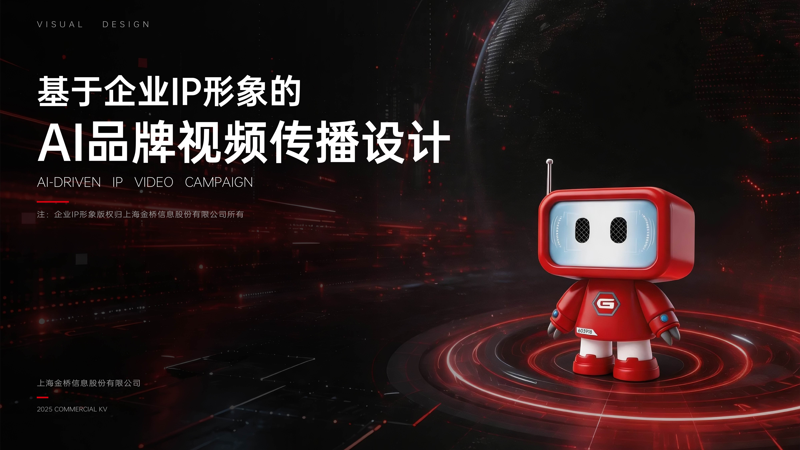
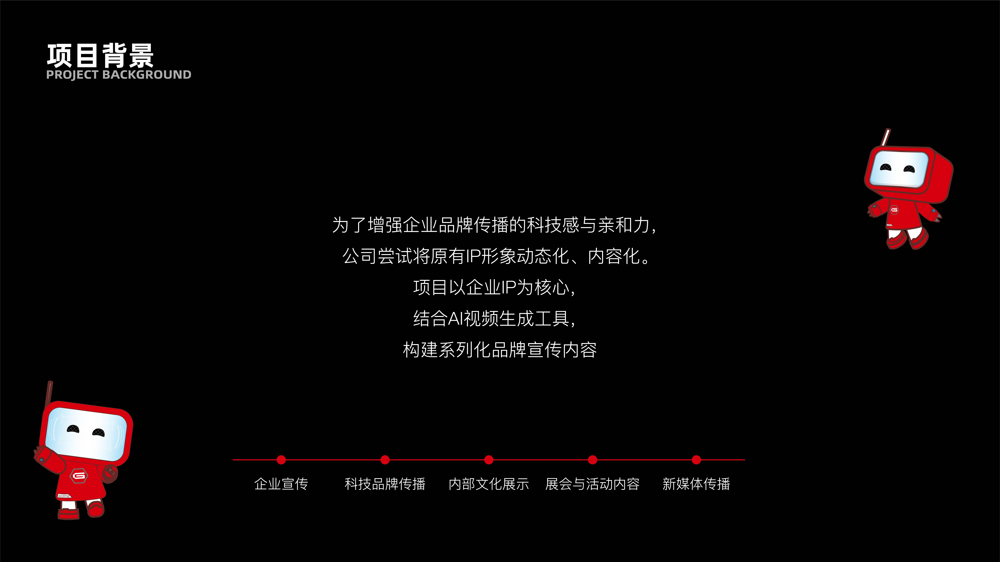
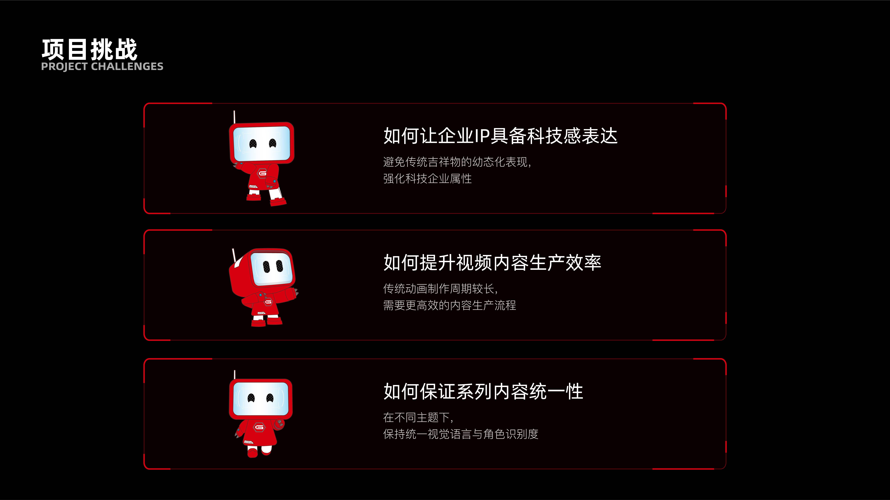
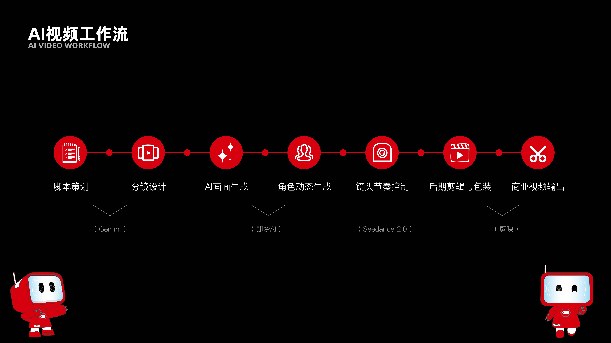
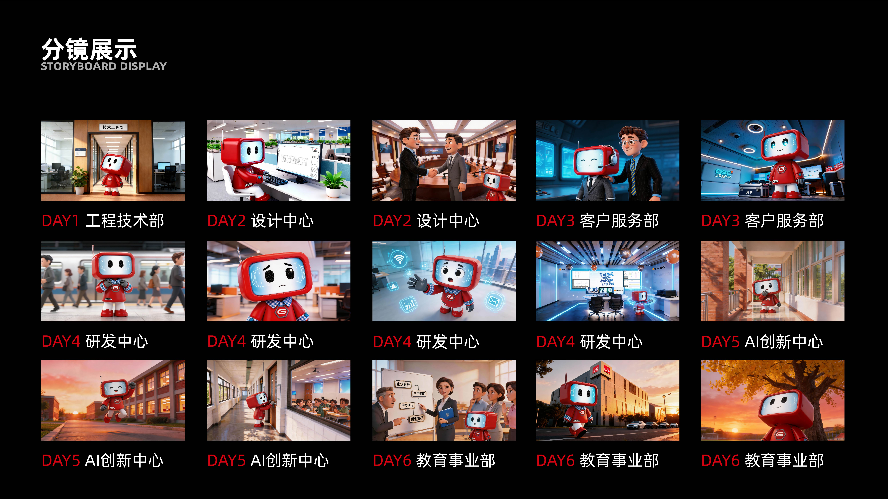
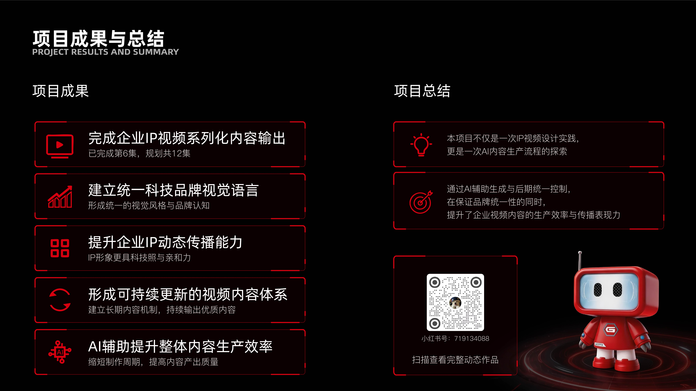

为了增强企业品牌传播的科技感与亲和力，公司尝试将原有IP形象动态化、内容化。项目以企业IP为核心，结合AI视频生成工具，构建系列化品牌宣传内容，覆盖企业宣传、科技品牌传播、内部文化展示、展会与活动内容、新媒体传播等多场景。
科技感表达 — 避免传统吉祥物的幼态化表现，强化科技企业属性
生产效率 — 传统动画制作周期较长，需要更高效的内容生产流程
系列统一性 — 在不同主题下，保持统一视觉语言与角色识别度
脚本策划（Gemini）→ 分镜设计 → AI画面生成（即梦AI）→ 角色动态生成（Seedance 2.0）→ 镜头节奏控制 → 后期剪辑与包装（剪映）→ 商业视频输出
完成企业IP视频系列化内容输出，已完成第6集，规划共12集。建立统一科技品牌视觉语言，形成统一的视觉风格与品牌认知。提升企业IP动态传播能力，IP形象更具科技感与亲和力。AI辅助提升整体内容生产效率，缩短制作周期，提高内容产出质量。形成可持续更新的视频内容体系，建立长期内容机制。





